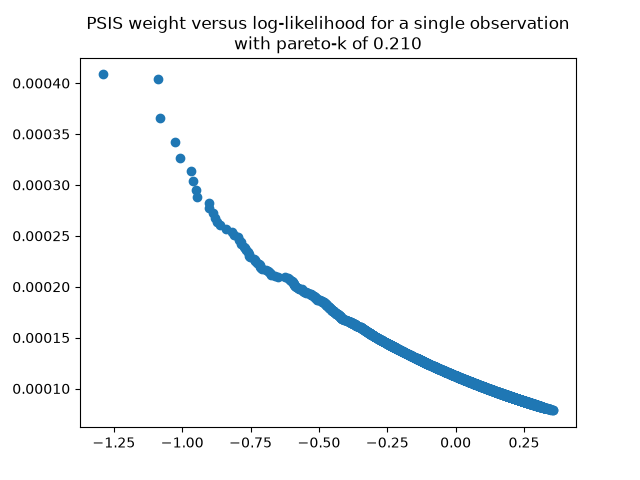

This guide explains the mechanics behind the PSIS (Pareto-Smoothed Importance
Sampling) weights returned by compute_psis_weights(): what they
approximate, how they relate to the raw log-likelihood, the sign-inversion
gotcha of the ArviZ accessor, and why the weight-vs-log-likelihood curve
flattens at its left tail. It also contains the diagnostic snippet for
visualizing the relationship for a single observation.
The Leave-One-Out predictive density $p(y_i \mid y_{-i})$ normally requires refitting the model $n$ times, once per observation. PSIS approximates it using a single posterior fit by reweighting the posterior draws:
where $\theta_s$ are the posterior draws and the raw importance ratios are inversely proportional to how well draw $s$ predicts observation $i$:
Draws that struggle to predict $y_i$ get large weights; draws that predict it easily get small weights. This reweighting reconstructs the target LOO distribution without any refit.
Because the weights are the reciprocal of the likelihood, they are strictly negatively correlated with the raw log-likelihood across posterior samples for any given observation:
| Raw Log-Likelihood | Importance Weight | Interpretation |
|---|---|---|
| Low (poor fit) | High | Draw predicts the observation badly, so it must be upweighted |
| High (good fit) | Low | Draw predicts the observation well, so it is already well represented |
The exploration snippet in Section 5 uses the xarray accessor
.azstats.psislw(). Do not multiply the input by $-1$
before the call; the accessor handles the sign internally.
For some observations the leftmost points of the scatter (most negative log-likelihood, i.e. the worst-fitting draws) do not blow up exponentially as the raw formula predicts. This is expected, not a bug:
The snippet below is a diagnostic for a single observation. It was
moved out of the compute_psis_weights() docstring into this
guide, because it explores the PSIS mechanism itself rather than demonstrating
the function's API.
from arviz_stats.utils import get_log_likelihood
from arviz_stats.loo.helper_loo import _get_r_eff
r_eff = _get_r_eff(idata, n_samples)
log_likelihood_da = get_log_likelihood(idata)
obs_index = 0
single_obs_ll = log_likelihood_da.isel(obs=obs_index)
lw_da, khat = log_likelihood_da.azstats.psislw(r_eff=r_eff)
single_obs_w_da = np.exp(lw_da).isel(obs=obs_index)
khat_obs = khat.isel(obs=obs_index)
# or equivalently, straight from the LOO routine:
# from arviz_stats.loo.loo import loo
# elpd_data = loo(idata, pointwise=True)
# single_obs_w_da = np.exp(elpd_data.log_weights).isel(obs=obs_index)
# khat_obs = elpd_data.pareto_k.isel(obs=obs_index)
plt.scatter(
single_obs_ll.to_numpy().flatten(),
single_obs_w_da.to_numpy().flatten(),
)
plt.title(
"PSIS weight versus log-likelihood for a single observation\n"
f"with pareto-k of {float(khat_obs):.3f}"
)Notes on the snippet:
obs is the observation dimension name of the
log-likelihood group; substitute the actual name if yours differs.float(khat.isel(...)) is required: f-string
:.3f formatting cannot format a raw numpy array or
xarray scalar.

| Region | What It Shows |
|---|---|
| Lower-right (high LL, low weight) | Well-predicted draws; contribute little to the LOO estimate |
| Upper-left (low LL, high weight) | Poorly-predicted draws; carry the LOO information |
| Flattened left tail | Generalized-Pareto smoothing pulling in extreme ratios |
The reliability of the PSIS approximation for each observation is summarized by its Pareto shape parameter $k$:
| Range | Status | Interpretation |
|---|---|---|
| $k \leq 0.70$ | Good | Smoothed weights reliable; LOO estimate trustworthy |
| $0.70 < k \leq 1.00$ | Bad | Potentially influential point; investigate the observation |
| $k > 1.00$ | Very Bad | Finite variance not guaranteed; LOO unreliable for this point |
Raw ratio: $w_{i,s}^{\text{raw}} = \exp(-\log p(y_i \mid \theta_s))$
Smoothed weight: $w_{i,s} = $ Pareto-smoothed, normalized $\exp(\text{lw})$
Sign convention: Pass the RAW positive log-likelihood; ArviZ negates internally
Curve shape: Exponential decay; flattened left tail = Pareto smoothing at work
Threshold: $k \leq 0.70$ reliable; inspect per-observation $k$ array
PSIS weights approximate the LOO posterior by upweighting posterior draws that predict each observation poorly, with the raw ratios computed from the reciprocal likelihood and then stabilized by generalized-Pareto tail smoothing. The weight-vs-log-likelihood curve is therefore an exponential decay with a deliberately flattened worst-fit tail, and the Pareto-$k$ diagnostic tells you how trustworthy the approximation is for each observation.
For the function's API, see compute_psis_weights() in
src/compressor_fouling_modeling/utility.py.